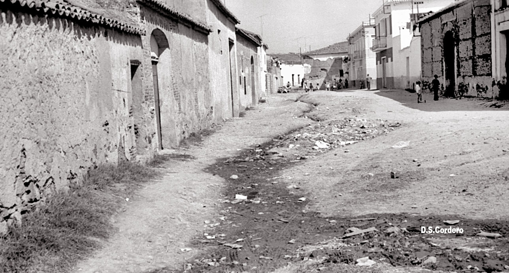
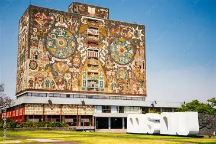

Infancia
la infancia del señor David Huerta fue Su origen primcipal es en Tulcingo de Valle Puebla, su Mamá fue la Sra María del Refugio Huerta Meza, el estudio la primaria y la preparatoria con es fuerzo y dificultades logro ser lo el siempre a querido lograr
Estudios y Formación
Es egresado de la licenciatura en Linguistica y Literatura Hispanica, BUAP. Actualmente es becario de investigacion en el programa del Diccionario del Español de México
Logros y Aportaciones
Su aportacion fue hacer un libro llamado la pitaya, Gildardo hizo su presentacion con todos sus escritores que lo ayudaron a escibir esa gran historia
Legado
Finalmente logro ir al lugar con tanto exfuero logro que fue a Portugal tambien a otros lugares más que con tanto exfuerso lo logro ir